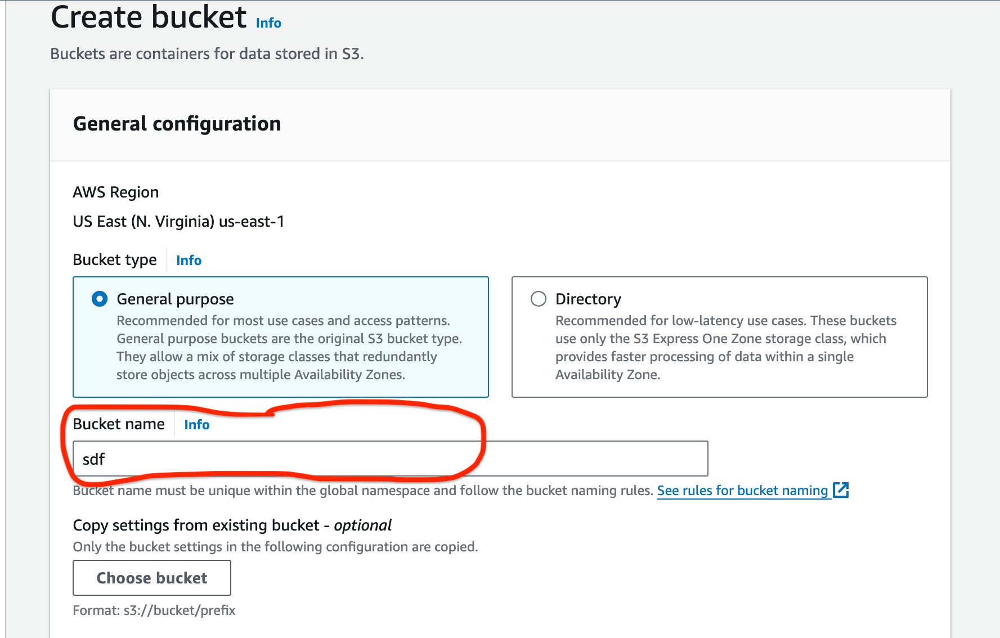
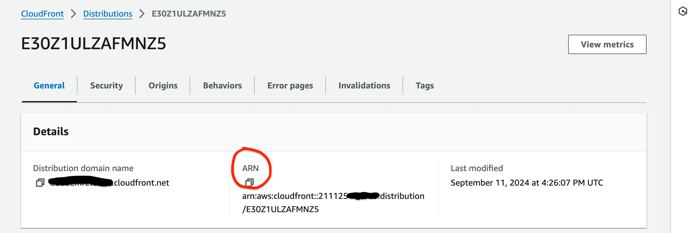
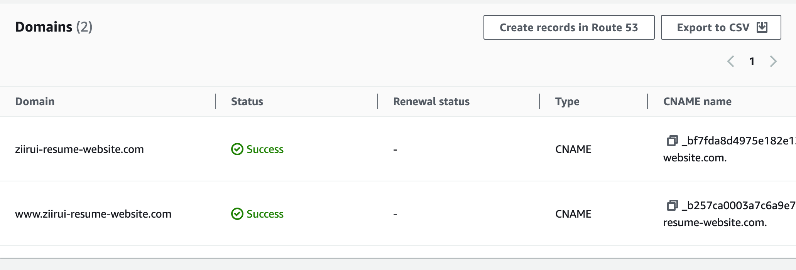
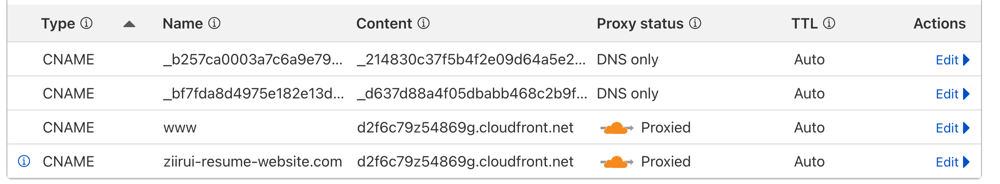
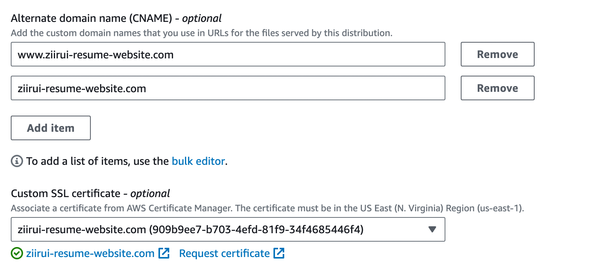
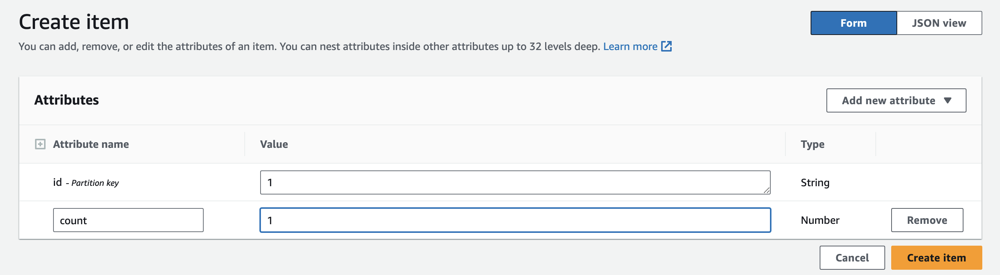

Introduction
This guide is based on the Cloud Resume Challenge and follows the steps listed inside it. That said, I strongly recommend purchasing the original book as it covers much more details. This post will only show the method I’ve done for my challenge. Think of this post as a helpful guide rather than a complete answer key.
The elements cover in this post:
- AWS (S3 bucket, Cloudfront, IAM, Lambda Function, DynamoDB, DNS, SSL Manager)
- CI/CD (Git Action)
- infrastructure as code (Terraform)
- Frontend Language (HTML, CSS) -> Now switch to Hugo
- Backend Language (Python, Javascript)
- Test (Cypress)
Please read through the <challenge> on the offical website before looking into my post, because I will directly dive into how I solve the problem.
1. Certification
The challenge recommonds the Certified Cloud Practitioner as a basic level. However I passed the Solutions Architect - Associate for a higher level approach. Ultimately the certificate offers professional knowledge regarding cloud services.
Q&A
- Q: Is getting a certificate worthy?
- A: The short answer: yes and no. If you want to become a cloud engineer or similar role (Site reliabilty Engineer, DevOps engineer), the answer is yes! If your goal is just to learn cloud services, then a certificate will not be worthy. Here are 2 major benefits:
1. Experience from the Certificate: The resume challenge will guide you through a limited set of AWS resources, specifically focusing on how to host a static website. Most of the time, you will need to handle various scenarios.
Let me offer you some cases:
- Are you familiar with VPC networks and EC2 instances, which are commonly used by companies?
- How to prevent accidental deletion in bucket? (Versioning / MFA)
- Do you understand the architectural difference between a company that wants to migrate services from on-premise to the cloud while treating the on-premise data center as a backup, versus a company that wants to extend its data storage to the cloud but keep all services hosted on-premises?
- ...
These values are not provided in resume challenge , but you will encounter in certification test. So like I said, define your goal of this challenge, whether you want to dive deep into the cloud world or not.
2. Career: It does add some values to your resume to help you stand out from other candidates, especially with this cloud project.
- Q: Any good resources you recommond to prepare for the exam?
- A: I used the Dojo bundle along with their exam. This was the only resource I used to prepare for the exam. You are absolutely free to explore any other lessons. (Note: I do not receive any compensation from Dojo and have no personal affiliation with them. I recommend it simply because it was the only resource I used; I cannot guarantee the quality of other materials).
*Impotant* Don't pay full price for the certification exam! Look for coupons or vouchers online!
2. Getting Started with AWS and IAM role
Head over to AWS and register an account. Yes, you’ll need to enter your credit card info, but don’t panic, AWS has a free plan that lasts for a year.
As for the IAM role, I recommend just sticking with the root user for now. It gives you full access to all the services, otherwise you’ll be tired with a lot of access denials later on.
Warning: This is a bad practice for security reasons. Don't do this long term! Especially if you're setting this up in a real production environment!
3. HTML & CSS
The foundation of building a website’s frontend: How you code it depends on your own style and taste. I use Hugo along with its Papermod theme to build my website. I strongly recommend using an existing tool to build your portfolio instead of hand-coding everything with plain HTML and CSS. Here’s why:
- If you’re just starting out and don’t plan on becoming a frontend developer, it’s really not the best use of your time.
- Let’s be real, writing perfect CSS for a beautifully designed website is super hard, especially when you’re still learning.
- Even if you manage to finish your website and the design meets your expectations, consider whether the time spent was worth the result you achieved.
Some other popular tools: Adobe, Notion, Wix
I’m definitely not trying to discourage anyone from writing their own HTML and CSS. In fact, I absolutely take my hat off for anyone who practice writing good CSS code. My point is just a friendly heads-up. I personally spent over 30 hours coding my site from scratch, and honestly, it still didn’t come close to what Hugo gave me in way less time. Switching to Hugo was a game changer.
I came across an HTML & CSS Tutorial that I found really interesting. Just to clarify, I didn’t use this tutorial in my own learning journey, but I thought the course designer’s final task of building a YouTube-style webpage was pretty cool.
4. Static Website
We store the HTML & CSS files on S3 bucket. Here’s how you can do it:
- Log in to your AWS S3 console.
- Click on “Create bucket” (it’s in an orange box).
- Enter a unique
bucket name. This name has to be unique across all AWS accounts in globe. Then, hit “Create bucket”. [You don’t need to change any other settings.]  - Go to your newly created bucket, click Upload, and upload your files. Make sure that your index.html file is right in the root directory of the bucket. This means when you click on your bucket, you should see index.html directly in the file section, not inside any folder!
For future convinience, use AWS CLI to upload the files by terminal. A useful tutorial video from Frank if you need
Commands we oftenly use:
// This command updates new file and delete the files that are not presented in the new updated repository.
aws s3 sync ./your_folder/ s3://your-bucket --delete --exclude "*.DS_Store" --exclude ".gitignore" --exclude ".git/*"
// Clean up all files in your bucket
aws aws s3 rm s3://your-bucket --recursive
5. HTTPS
Using HTTPS with CloudFront has several benefits:
- Encryption: HTTPS encrypts your content while it’s being transferred between AWS and the user’s PC, keeping it secure.
- Traffic Control: CloudFront helps manage traffic more efficiently and scales with demand. (Distribution got its name for a reason :)
- Cost: Serving S3 content via CloudFront is FREE. (Just a note: if you’re hosting your website via S3, AWS does charge for read times.)
Let me break down the CloudFront setup for you:
- Log in to your AWS CloudFront console.
- Click on “Create distribution” (it’s in an orange box).
- Update the following sections:
- Origin domain: Choose the bucket you created.
- Origin access: Set this to
Origin access control settingsto ensure that only your distribution can access the S3 content.- Click Create New OAC, then Create.
- Viewer Protocol policy: Select
Redirect HTTP to HTTPS. - WAF:
Do Not Enable - Default root object:Only change this if your
index.htmlis named something different, like “project1.html” or “random_name.html”. CloudFront needs to know the name of the root object to serve your content correctly.
- After creating your distribution, wait about 3-5 minutes for it to deploy. Once it’s ready, go to your new distribution details. You’ll find a section prompting you to create a policy and paste it into S3.
- Go to S3 -> Permission in the navbar -> Scroll down to Bucket Policy -> Paste your policy there.
If you need a policy template, here’s one you can use:
{
"Version": "2008-10-17",
"Id": "PolicyForCloudFrontPrivateContent",
"Statement":
[
{
"Sid": "AllowCloudFrontServicePrincipal",
"Effect": "Allow",
"Principal": { "Service": "cloudfront.amazonaws.com" },
"Action": "s3:GetObject",
"Resource": "arn:aws:s3:::your_bucket/*",
"Condition":
{ "StringEquals": { "AWS:SourceArn": "your_cloudfront_arn" } },
},
],
}
Find your ARN 
- Until now, you should be able to see your site from
CloudFront URL(Distribution domain name in The above picture)
6. DNS
You can buy a domain from anywhere. Some popular options are Route S3, Cloudflare, or any other DNS provider.
- A domain typically costs around $10 a year, and that’s the only real expense for this project.
- Refer to your DNS provider for a simple guide on purchasing the domain, it’s usually just a simple process of typing the desired domain name, paying, and you’re good to go.
Now, let’s move on to connecting your domain with CloudFront so your S3 content can be accessed through your domain (just like how my site is at https://www.ziirui-resume-website.com). We’ll also use AWS Certificate Manager to add SSL for security.
Steps for Creating SSL and Verifying Your Domain
- Log in to the Certificate Manager Console
- CLick Request (orange button) and then Next
- Enter your domain name (ex: example.com), then hit Request
You’ve now created an SSL certificate, but we need to verify that the domain is yours. Here’s how to do that:
-
Scroll down to the Domains section of your new SSL. You’ll see a CNAME name and a CNAME value. these are like a key and value pair. You’ll need to create a record in your DNS provider for each of them. Don’t panic! Just search “add record in [Your_DNS_provider_name]” on your browser for step-by-step videos online. Reminder:
- The record type is
CNMAE. - The record name is
CNAME name. - Record target is the
CNAME value. - Record status is
No Proxy.
- The record type is
-
The Do this step for all of your SSL domains. Once you’ve added those records, check back in the Certificate Manager. If everything’s set up correctly, you’ll see “Success.” 
-
After verification, we have proved the DNS ownership to Certificate Manager, now we can connect DNS with our CloudFront. Step below:
- Copy your CloudFront URL
- Go to your DNS provider and create two
CNAMErecords:- One with Name =
wwwand Target = CloudFront URL. - Another with Name = your root domain (e.g., example.com) and Target = CloudFront URL.
- One with Name =
Final look for DNS provider console:

Setting SSL in CloudFront (Don't panic! It's simple, you've done most of the job):
- Go to your CloudFront distribution
- Under General, click Edit Settings.
- In Alternate domain name (CNAME), enter your domain (“your_root_domain” and “www.your_root_domain”)
- In Custom SSL certificate, Select your SSL. 
- Under Custom SSL certificate, select the SSL certificate you created.
Now, test your website using your domain. If all went well, your content should be accessible via your personal DNS!
7. Database
For this part, we’ll be using DynamoDB to keep track of our visitor count.
Here’s how to create a DynamoDB table:
- Same as always, open your DynamoDB console
- Click the Create Table (it’s orange).
- Fill out the form:
- Table Name: You can choose any name you like.
- Partition Key: Enter
idand selectString - Table Setting: Choose
Customize settings - Read/write capacity settings: Set this to
On-demandinstead ofProvisionedto avoid extra charges.
- Click Create Table
Explanation: The partition key can be anything; it’s just a way to retrieve the visitor counter from Python later on. We choose On-demand for the table settings to only pay for what we use, rather than the default Provisioned setting which can lead to charge overhead.
- Once your table is created, click Explore items (found in the orange box at the top right).
- Scroll down and hit the Create item button.
- For the
idvalue section, you can enter1for simplicity. - In the top right corner, click Add new attribute and select
Numberfor the attribute type. This will be used for the visitor count. - Create an attribute named
countand set its value to1.
Here’s what it should look like: 
Now you have an item with an id of 1 and a count value of 1. Next, we’ll set up a Lambda Function to retrieve and increment this value.
8. Lambda API & Python
Setting up a Lambda Fucntion should be pretty straightforward for you. Just a quick tip: make sure to choose the programming language (the Runtime) you prefer for interacting with the database. For this guide, we’ll use Python. Remember, this Lambda function will trigger every time someone visits your domain.
We’ll be using the Boto3 library for working with DynamoDB in Python. Without further word, here’s a complete code template for your Lambda function:
Warning: Don’t copy this code if you’re not familiar with Python or the Boto3 library. Doing so without understanding could lead to issues and will only cause you more trouble in the long run.
import json
import boto3
#connect to table
dynamodb = boto3.resource("dynamodb")
table_name = "your_table_name"
table = dynamodb.Table(table_name)
def lambda_handler(event, context):
id = "your_id"
response = table.get_item(Key={
'id':id
})
# # If the item exists, increment the count by 1
if "Item" in response:
views = response["Item"]["your_number_type_key_name"]
views += 1
table.put_item(Item = {
"id" : id,
"views" : views
})
# # If the item doesn’t exist,indicating this is the 1st time our site being visited, then create a view of 1
else:
views = 1
table.put_item(Item = {
"id" : id,
"views" : views
})
# The content our javascript will receive in html file.
return_format = {
'statusCode': 200,
'body': json.dumps({
'message': 'success',
'count': int(views),
'event': event
})
}
return return_format
8. Javascript
Now that we’ve got the Lambda function reading data from DynamoDB, the next step is getting that data into our HTML file so we can display it on the website. This is where JavaScript comes in handy!
We’ll be using a simple format from AWS to help us fetch and display the DynamoDB values.
(Here is a Javascript tutorial if you need.)
// Be sure to attch this id in your HTML, (e.g. <p class="your_counter_id_in_html"> times</p>)
const counter = document.querySelector(".your_counter_id_in_html");
async function update_views() {
try {
const response = await fetch("your_lambda_function_URL", {
method: "POST", // Set the method to POST
headers: {
"Content-Type": "application/json/update_counter",
},
body: JSON.stringify({}),
});
const data = await response.json();
counter.innerHTML = `${data.count}`;
} catch (error) {
counter.innerHTML = `43`;
}
}
update_views();
9. CI/CD
Here’s how we’ll use Github Action. If you’re not familiar with CI/CD (Continuous Integration and Continuous Deployment), let me give you a quick scenario.
Imagine you push your files to GitHub, but you need those files to be updated on AWS. Without CI/CD, you’d have to manually update them on AWS, uploading HTML and CSS files to an S3 bucket, updating your Python code in a Lambda function, and possibly adjusting policies in different places. And if a bug pops up after all that work, guess what? You’d have to go through the whole process again LOL!
CI/CD automates these tasks, so you don’t have to handle all that manual work every time you make a change. In our final result, all you need to do is push your code to GitHub using git push origin main, and GitHub will automatically update the changes on AWS for you.
This section is still in progress, so stay tuned!
Feel free to check out my other feature in my portfolio!
10. Test Cypress
This section is still in progress, so stay tuned!
Feel free to check out my other feature in my portfolio!
11. Infrastructure as code
This section is still in progress, so stay tuned!
Feel free to check out my other feature in my portfolio!